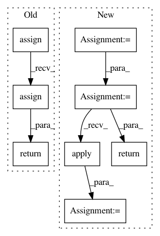

0d60d295fd0674e67aae7fb0c7f8c255df155a87,QUANTAXIS/QAFetch/QATdx.py,,__QA_fetch_get_index_transaction,#Any#Any#Any#Any#,975
Before Change
if len(data_) < 2:
return __QA_fetch_get_index_transaction(code, day, 0, api)
else:
return data_.assign(date=day).assign(
datetime=pd.to_datetime(
data_["time"].apply(lambda x: str(day) + " " + x))) \
.assign(code=str(code)).assign(
order=range(len(data_.index))).set_index("datetime",
drop=False,
inplace=False)
@retry(stop_max_attempt_number=3, wait_random_min=50, wait_random_max=100)
def QA_fetch_get_stock_transaction(code, start, end, retry=2, ip=None,
After Change
data_arr = []
max_offset = 21
cur_offset = 0
type_ = "tick"
while cur_offset <= max_offset:
one_chunk = api.get_history_transaction_data(
_select_index_code(str(code)), str(code), cur_offset * batch_size,
batch_size, QA_util_date_str2int(day))
if one_chunk is None or one_chunk == []:
break
data_arr = one_chunk + data_arr
cur_offset += 1
data_ = api.to_df(data_arr)
for _ in range(retry):
if len(data_) < 2:
return __QA_fetch_get_index_transaction(code, day, 0, api)
else:
data_ = data_.assign(
date=day,
datetime=pd.to_datetime(data_["time"].apply(
lambda x: str(day) + " " + x)),
code=str(code))
data_ = data_.assign(date_stamp=data_["datetime"].apply(lambda x: QA_util_date_stamp(x)),
time_stamp=data_["datetime"].apply(
lambda x: QA_util_time_stamp(x)),
type=type_,
order=range(len(data_.index))).set_index("datetime", drop=False)
data_["datetime"] = data_["datetime"].apply(lambda x: str(x)[0:19])
return data_
@retry(stop_max_attempt_number=3, wait_random_min=50, wait_random_max=100)
def QA_fetch_get_stock_transaction(code, start, end, retry=2, ip=None,
In pattern: SUPERPATTERN
Frequency: 3
Non-data size: 8
Instances
Project Name: QUANTAXIS/QUANTAXIS
Commit Name: 0d60d295fd0674e67aae7fb0c7f8c255df155a87
Time: 2019-09-11
Author: huchen@szu.edu.cn
File Name: QUANTAXIS/QAFetch/QATdx.py
Class Name:
Method Name: __QA_fetch_get_index_transaction
Project Name: QUANTAXIS/QUANTAXIS
Commit Name: 04416f58f1d6b13bbdd833ad516718503637ce9a
Time: 2021-01-02
Author: yutiansut@qq.com
File Name: QUANTAXIS/QAFetch/QACrawler.py
Class Name:
Method Name: QA_fetch_get_sz_margin
Project Name: QUANTAXIS/QUANTAXIS
Commit Name: 0d60d295fd0674e67aae7fb0c7f8c255df155a87
Time: 2019-09-11
Author: huchen@szu.edu.cn
File Name: QUANTAXIS/QAFetch/QATdx.py
Class Name:
Method Name: __QA_fetch_get_stock_transaction